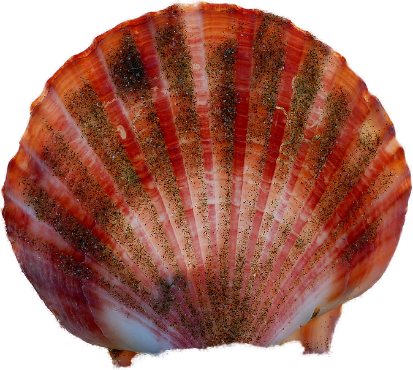
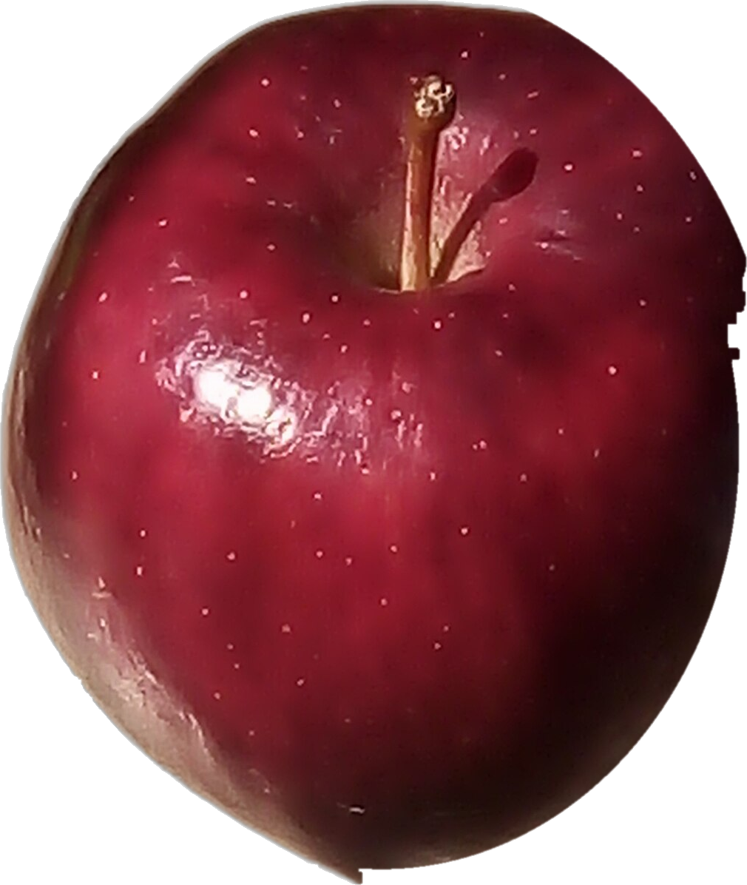
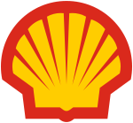
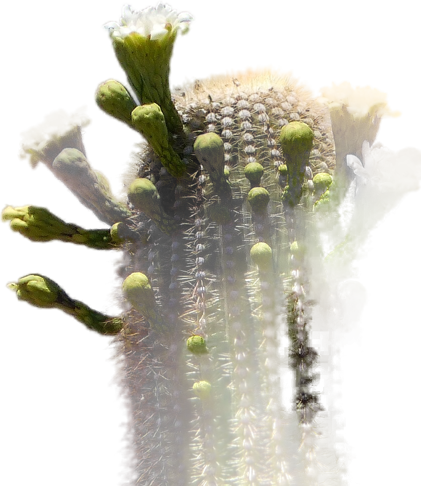
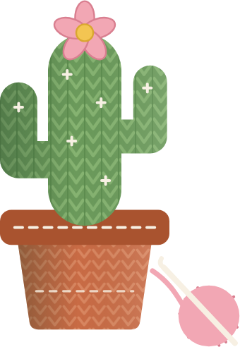

ست أشياء تشوفها كل يوم
صارت شعارات تعرفها
خمن الشعار قبل ما تسحب




allawi.psd
تفاحة

العضة هي اللي خلتها أبل
روب جانوف رسم الشعار سنة 1977، وحط العضة حتى محد يحسبها كرزة. كل الناس تقدر ترسم تفاحة، بس هاي العضة صارت إلهم.
تمساح
لقب صار شعار
الصحافة سمت رينيه لاكوست التمساح بعد رهان على شنطة من جلد تمساح. صديقه روبير جورج رسمه، مرسوم من الجنب وحلكه مفتوح حتى ينقرى وهو صغير على صدر القميص.
صورة التمساح: Holger Krisp، CC BY 3.0
صدفة
صدفة صارت شركة نفط
أبو المؤسسين جان يبيع صدف بلندن، فسموا الشركة شل. النسخة اللي تعرفها رسمها ريمون لووي سنة 1971: خطوط تطلع من نقطة وحدة، تنقرى من بعيد على محطة البانزين.

ثورين
ثورين وجه لوجه
ريد بول أخذت الثور من مشروب تايلندي اسمه كراتينغ داينغ. ثورين يتناطحون وشمس وراهم، والتناطح يوصل فكرة الطاقة بدون ولا كلمة.

الثور: تمثال برونز من اليونان القديمة
حورية
بذيلين
ستاربكس أخذتها من رسمة خشب من القرن السادس عشر، لأن الشركة بدت بسياتل، مدينة ميناء. سنة 2011 شالوا الاسم من الشعار وبقت الحورية وحدها.
بالصورة: رسمة خشب لحورية بذيلين، من سنة 1529
دائرتين وبس
وين يتداخلن، يطلع لون ثالث
ماستركارد على هالدائرتين من الستينات، حمرة وصفرة. سنة 2019 شالوا الاسم، لأن الدائرتين صارن يكفن.

شي بسيط يتذكره الناس،
وتفصيلة وحدة تخليه إلك.
الست شعارات بدت بشي يرسمه أي طفل. اللي خلاها ما تنسى هي التفصيلة اللي محد غيرهم يقدر ياخذها.
صبار
كاكتوس مشروع صغير لبنت تحيك بيدها، فالشي البسيط جان صبار، لأن هذا اسمه.
والتفصيلة اللي محد ياخذها منها: الصبار محوك من خيط، مثل كل شي تسويه.


من شغلي، هوية مشروع كاكتوس
صورة الصبار: gailhampshire، CC BY 2.0
اكتب مشروعك
بالتعليقات
وأقولك شنو الشي البسيط اللي أبدي منه بشعاره، والتفصيلة اللي تخليه إلك.
وإذا تريده يصير شعار، راسلني على الخاص.
@allawi.psd